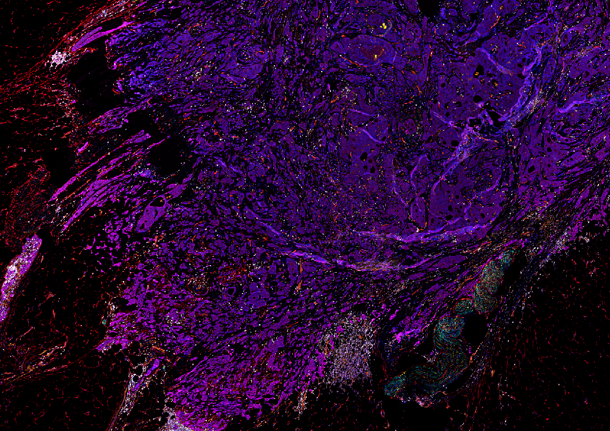
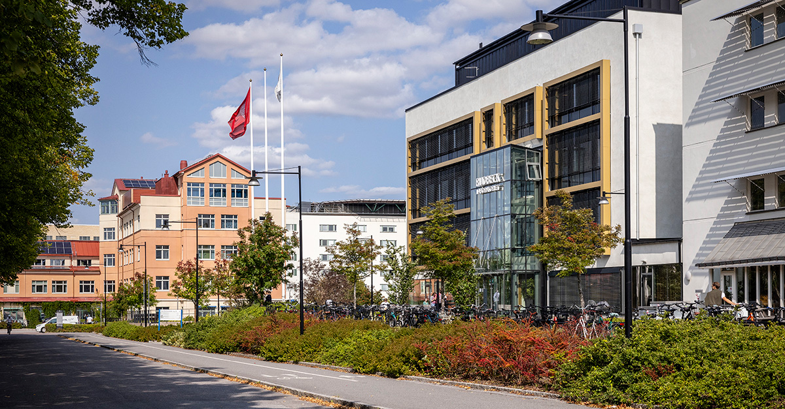
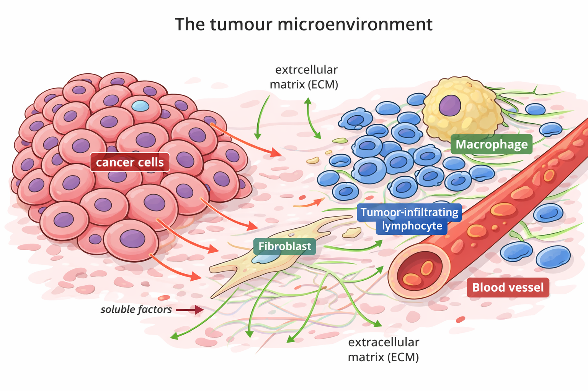
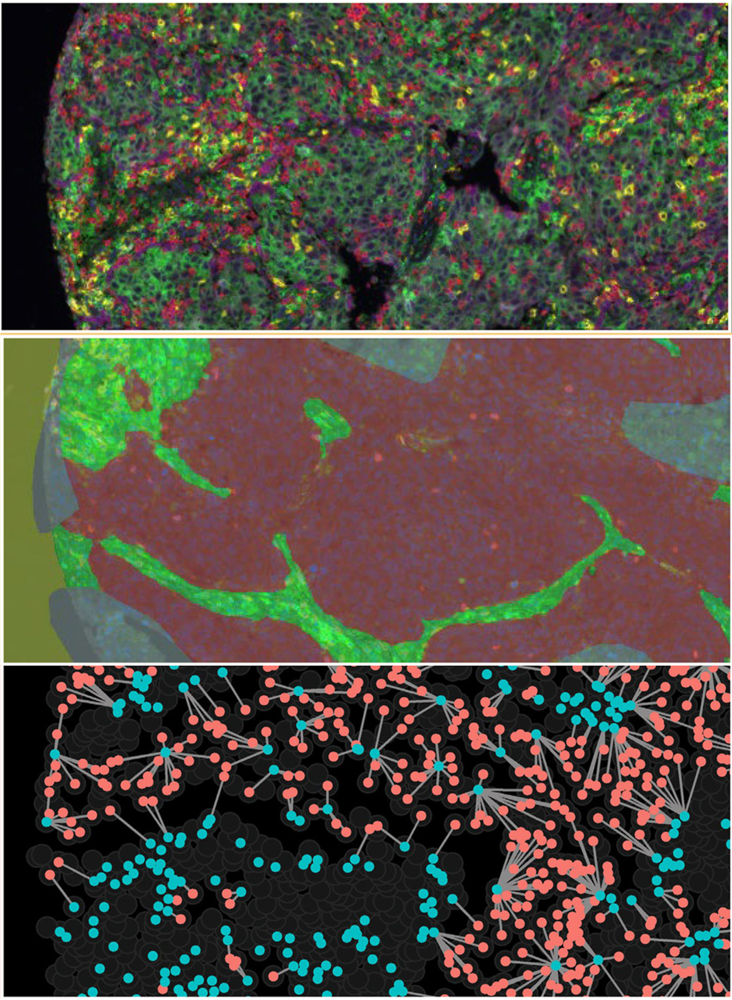

Incremental prognostic value of immune cell densities beyond clinical parameters in non-small cell lung cancer
Nordling, Love; Backman, Max; Mezheyeuski, Artur; Lindblad, Joakim; et al.

Interactions between cancer cells and the surrounding stroma—immune cells, fibroblasts, and vascular cells—shape tumour initiation, progression, and responses to therapy.
Research
Decoding the tumor landscape through tissue architecture, cell-to-cell interactions, and clinically anchored spatial biology.
Cancer is not just a collection of malignant cells, but a complex organ composed of various cell types interacting in a structured environment. Our lab aims to understand how this organization influences disease progression and response to therapy.
Mapping the lung cancer microenvironment to understand how immune context, stromal organization, and signaling states shape prognosis and treatment response.
Learn more arrow_forwardStudying early breast cancer lesions and localized tumor-stroma interactions to understand progression, recurrence risk, and response to radiotherapy.
Learn more arrow_forwardSelected work
Nordling, Love; Backman, Max; Mezheyeuski, Artur; Lindblad, Joakim; et al.
Lindberg, Amanda; Hellberg, Louise; Grandon, Anaïs; Yu, Hui; et al.
He, Liqun; Testini, Chiara; Hekmati, Neda; Bonello, Altea; et al.
Updates
Funding, collaborations, and recent developments across the group’s spatial biology and cancer research programs.

Continued investment strengthens our work on mapping tumor tissue architecture and clinically relevant biomarker discovery.

Ongoing presentations and collaborations continue to connect tissue biology with translational oncology questions.

Combined pathology, imaging, and sequencing approaches remain central to the group’s strategy for biomarker and target discovery.